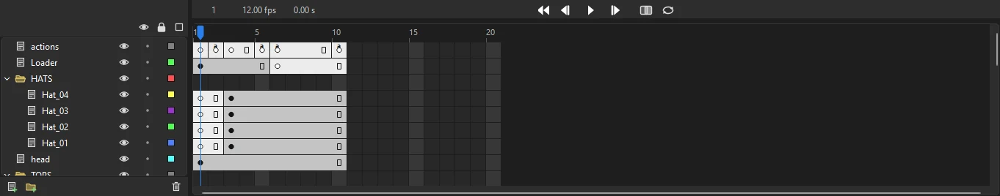
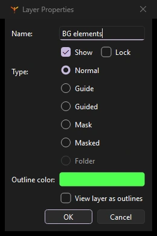

Animation
Timeline and layers
The timeline lays out your animation in two directions: layers stacked from top to bottom, and frames running from left to right.

Reading the timeline
Along the top is the header, with the current frame number, the frame rate, the elapsed time and the playback controls. Below it, the ruler numbers the frames, and the playhead marks the frame shown on the stage. Click or drag in the ruler to move the playhead.
Each row of the frame grid belongs to the layer beside it. The cells show what is on each frame:
| You see | It means |
|---|---|
| Filled dot | A keyframe with content |
| Hollow dot | An empty (blank) keyframe |
| Gray frames | The keyframe's content held over time, ending in a small hollow rectangle |
| White frames | Empty frames |
| Lilac span with an arrow | A classic tween |
| Green span with an arrow | A shape tween |
| Motion tween span | A motion tween, with its property keyframes marked along it |
| Yellow-green span | An armature pose span (see Bones) |
| Flag or label text | A frame label, comment or anchor |
| Small a | A frame with a script |
| Waveform | A sound playing over those frames |
Layers
Layers keep parts of your scene separate, so you can draw and animate each one without disturbing the rest. Layers higher in the list draw in front.
Layer controls
Each layer row has, from left to right:
- Name
- Double-click to rename. Click to make it the current layer.
- Pencil
- Marks the current layer, where new artwork goes.
- Eye
- Shows or hides the layer on the stage. Hidden layers show a red cross.
- Lock
- Protects the layer from changes.
- Color square
- Click to view the layer's artwork as outlines in that color. The color is also used for the layer's selection highlights.
The eye, lock and square buttons at the top of the list apply to every layer at once.
Add, delete and reorder
- The buttons below the layer list add a new layer or a new folder, and delete the current layer.
- Drag a layer up or down to change the stacking order. Drop it onto a folder to move it inside.
- Right-click a layer for Insert Layer, Insert Folder, Delete Layer, Show All, Hide Others and Lock Others.
Folders
Folders group layers, for example all the parts of one character. Click the arrow beside a folder to open or close it; a closed folder hides its layers' rows in the frame grid too. Hiding or locking a folder hides or locks everything inside it.
Layer properties
Right-click a layer and choose Properties... to set several things at once:

- Name, Show and Lock
- The same as the controls in the layer row.
- Type
- Normal, Guide, Guided, Mask, Masked or Folder. See Masks and guides.
- Outline color
- The layer's color for outlines and highlights.
- View layer as outlines
- Draws the layer's artwork as outlines.
Layer parenting
Files from Animate that use layer parenting, where one layer's artwork follows another's, play back correctly in Phoenix.
Copying, pasting and duplicating layers, selecting several layers at once, Alt-clicking a column to toggle all other layers, setting up layer parenting, and layer depth for multiplane camera moves.